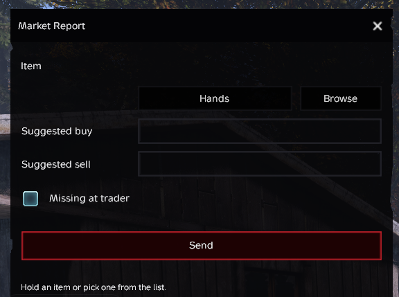

Market
Reports
Noticed an item missing from a trader? Think a price needs adjusting? Found something in the market that just doesn’t seem right?
Players can send a Market Report directly to staff while they’re in-game.
What Are Market Reports?
Market Reports are a way to send item-specific trader and economy feedback directly to staff from in-game.
Back to contents ↑How to Submit a Market Report

Open the menu
Press F9 while in-game to open the Market Report menu.
Select the item
Select the item you want to report. If you’re currently holding it, select Hands. Otherwise, use Browse to find the item.
Suggest prices
Enter a Suggested Buy Price and/or Suggested Sell Price if you’re recommending a price change.
Flag missing stock
Check Missing at trader if the item isn’t available where you believe it should be.
Send the report
Press Send to submit your report to staff.
What Can I Report?
Market Reports can be used to alert staff about:
- An item that is missing from a trader
- An item that you think should be added to a trader
- A buy price that seems incorrect
- A sell price that seems incorrect
- Items with unusual or unintended market behavior
- Other item-specific trader or economy issues
Important Information
Whenever possible, select the exact item you’re reporting. This makes it much easier for staff to find and review the item without having to play detective in a database dungeon.
Back to contents ↑F9 — Open Market Reports
Open Market Reports while in-game.